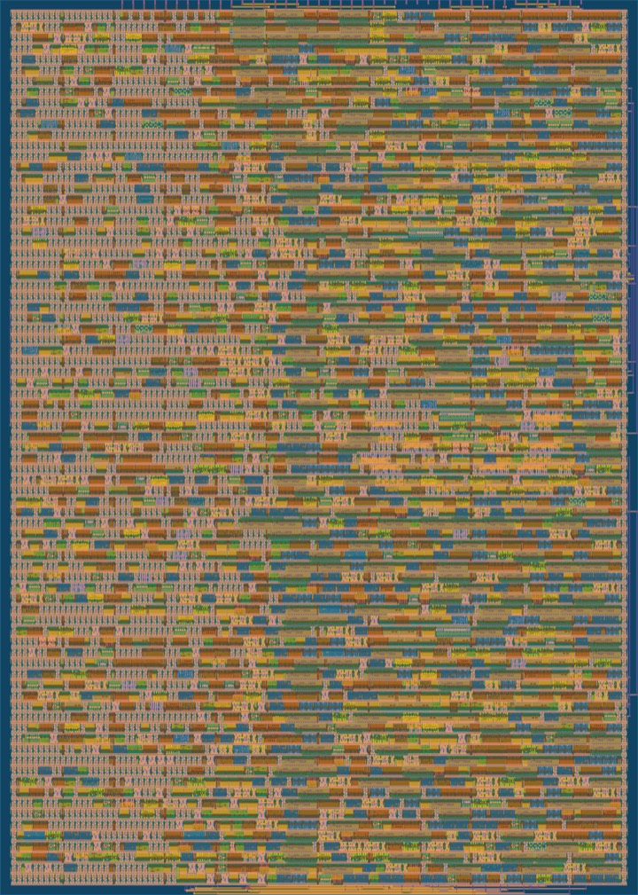

Draw a digit. The chip answers in 8 clocks.
large and centered
This is a handwritten digit classifier compiled into logic for a Tiny Tapeout design on SkyWater sky130. Its 640 weights are wired into the gates. Eight bytes of pixels go in, one per clock, and the digit comes out on a 7 segment display.
An AI agent designed it and the free Tiny Tapeout flow checked it: timing clean at 50 MHz, DRC and LVS clean, every score matching Python bit for bit. It has not been fabricated.
What happens in those 8 clocks
Each row of pixels feeds all ten digits at once. The weights are not stored anywhere: they are constants, so each one became a handful of gates, and the chip never has to load them through its pins.

Fewer bits per pixel, more work per pin
The chip has only eight data pins, so the lever is how many pixels fit in a byte. Here is the same digit at 4, 2 and 1 bits, each classified by the design built for that precision. The classifier above is the 1 bit one.
2 MAC per clock, 95.6% right
4 MAC per clock, 95.3% right
8 MAC per clock, 91.4% right
From 0.005 to 80 multiply accumulates per clock
Seven designs through the same eight data pins, each checked on the official Tiny Tapeout flow. The scale is logarithmic: each gridline is ten times the one before.
The checks caught the agent, not the other way round
Every test also runs on a deliberately broken build, which must fail. These are mistakes the agent made, and the check that stopped each one.
Synthesis deleted 64 weight registers
A new input pin was left unconnected, so the weights could never change and the area looked 4 times too small. Comparing flip flop counts with the RTL caught it.
A driver timed out after exactly 746 dot products
It compared its timeout with total cycles since start instead of per call. The 3,600 dot product digit run exposed it.
A wrong bias passed the classifier test
The test only checked the predicted digit, and no test image happened to flip. The chip now has a mode to read all ten scores back, and all 3,600 are compared.
Timing closed on the fourth layout
Before layout it showed +4.46 ns of slack; after routing it missed by 0.65 ns, because each pixel pin fed about 80 gates. Registering the inputs and splitting the comparison closed it at +5.26 ns.
Measured on the layout, not estimated
From the Tiny Tapeout GitHub Actions flow on each repository, at 50 MHz and the slow corner (ss, 100°C, 1.60 V).
| Design | Tiles | Utilization | Setup slack | 360 digits | Source |
|---|---|---|---|---|---|
| Classifier compiled into logic | 1x2 | 75.0% | +5.26 ns | 8 clocks each | tt-digit-classifier |
| INT4 weights, 1 bit activations | 1x1 | 82.5% | +5.52 ns | 29,320 clocks | tt-lowbit-dot-accelerator |
| INT4 weights stationary | 1x1 | 76.9% | +9.43 ns | 115,760 clocks | tt-int4-dot-accelerator |
| INT8 on parallel pins, chained | 1x1 | 61.8% | +7.13 ns | 482,400 clocks | tt-pin-dot-accelerator |
| INT8 over UART | 1x1 | 65.5% | +5.14 ns | not run | tt-uart-dot-accelerator |
What is checked
DRC 0, LVS 0, antenna 0 and the Tiny Tapeout precheck on every design. Gate level simulation of the routed netlist, including the digit runs. A k-induction proof that the low bit designs never drop a result. The three newest designs also build as iCE40 FPGA bitstreams.
What is not
Silicon: nothing here has been fabricated. The demo board host software has not run on real hardware. A digit you draw is classified in this page with the same integer math as the chip, not by simulating its netlist.
Check your own Tiny Tapeout design in 30 seconds
The first check in this pipeline is free: tt-fit predicts tile utilization and 50 MHz timing before the 10 minute hardening run. It is calibrated on 436 real projects from three sky130 shuttles; on a shuttle it never saw, it was off by 4.4 points on average.
name: tt-fit
on: [push]
jobs:
fit:
runs-on: ubuntu-24.04
steps:
- uses: actions/checkout@v4
- uses: Joonsense/tt-fit@v1